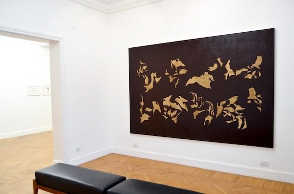

Originally published in Mada Masr on 12 February 2014
By Ismail Fayed

Doa Aly, "The House of Sleep," 2013-2014, exhibition view. Image courtesy of the artist and Gypsum Gallery. (Photograph: Nadia Monier)
There are many advantages to taking a text by the Roman poet Ovid and trying to render it in another medium. The many layers that create the text offer numerous possible planes for investigation and just simple wandering.
It is somewhere between meticulously investigating those complex layers and being pulled toward wandering in the vastness created by them, that Doa Aly revealed her own artistic process in her recent exhibition at Zamalek's Gypsum Gallery.
In a medium she hadn't approached for close to a decade, Doa revealed her own problematic relationship with the medium in which she was primarily trained. Originally educated as a painter in the Fine Arts Faculty, she had since elected to immerse herself in other media, from filmed choreographies to video pieces to constructed sculptures. Her subject matter, however, did not change: a preoccupation with classical texts and their relationship to psychology permeates most of her work.
For this exhibition, she confronted not only her subject matter, but also the question of what it means for a "contemporary artist" to paint a large-scale canvas. This is inevitable in a painting show by an artist who does not normally work in painting, especially as contemporary artistic practices have been consistently moving away from "traditional" formats of representation, which are deemed by many critics, curators, and theorists as uncritical, or even irrelevant to our contemporary reality.
This question still seems unresolved for all artists, in Egypt or elsewhere, who are classically trained. Is the medium dead? How can we continue to paint? What comes out of such a process? Yet such questions also seem dated, almost "classical" in themselves. They are modernist relics, harking back to a time of cataclysmic change, whose conclusions unsettled many conventions but never really answered them. Should we abandon painting altogether? What if we still have something to say? How do we say it?
In four painted canvases, two large and two small, and a series of 10 small, scrupulously drawn pencil works, Doa sets out to 'paint' the tragic love story of Ovid's Ceyx and Alcyone from his famous Latin "Metamorphoses." The myth in its Greek form combined the usual elements of hubris and pride on the one hand, and avenging gods on the other. Ceyx and Alcyone were happily married until they started calling themselves Zeus and Hera. The gods would not hear of it, and decided to destroy the insolent couple. Ceyx went to an oracle and drowned in a storm, and Morpheus, the god of dreams, appeared to Alcyone as his "dripping ghost" to inform her of his death. Driven to madness by grief, Alcyone drowns herself in the sea, where the gods take pity on her and transform her and Ceyx into halcyon birds.
Like all Latin poets, Ovid is not interested in theology or vengeful gods. He rather opts for transposing the element of tragedy to a psychological plane. Thus, it is not because they offended the gods that Ceyx and Alcyone faced their tragic fate — rather their own neurosis and obsessive dependency on each other are the source of the tragedy. Ovid in a way prefigures Freud's reading of tragedy by taking out the central role of the gods' punishment and replacing it with personal folly or error.
It is from that perspective that Aly reads Ovid's version of Ceyx and Alcyone. The longest of his love poems, in which he intentionally used rhetorical devices of repetition and "doubling" of sounds or meanings (one for each of the doomed lovers), the actual text itself, when uttered, gives a sense of obsessiveness and hysteria.
Employing an anatomical lens to the body, in the drawings Aly uses bones as her primary unit of construction. The metaphorical bones of the text are a graphic motif, used to translate the text into a visual process. They become a visual device similar to the rhetorical devices used in Ovid's text: instead of anaphoric reiteration (repeating the same word or phrase at the beginning of neighboring clauses), Aly employs a similar, perfectly delineated bone structure for each drawing. As in polyptoton (when words from the same root are repeated for emphasis) Aly's deep-rooted lines are repeated with different angles and in different formations.
The drawings unfold into a series that constructs a narrative. The precise drawing of overlaid bone structures looks like a surficial map that defines the relationship between different geological phenomena, mapping out different depths, regions, realms, giving the sense of a certain geography. These geographic patterns create a terrain that is visually explored through the series. Each work has one sentence from the text, also written in pencil, accompanied by a drawing. The drawings either depict solely abstracted figures partially shaded in black, or show figures alongside detailed drawings of bone structures. The density of the lines varies with each drawing: sometimes it looks as if several layers are superimposed and sometimes one part of the bone structure is taken out and used as a motif. The figures' relationship to the bone structures seem to fluctuate with the story's events, creating a pace and sense of narrative.
On two separate walls were two large canvases of abstracted details from the pencil-drawn bone structures. The abstracted sections have textures and colors that contrasted with the rest of the canvas (beige versus a dark brown background, for example). This gave the sensation that the artist had dissected her own drawings and exploded them in a different scale and to a different medium, raising questions about how these abstracted figures relate to Ovid's work. Each figure becomes a motif paralleling one in the story — for example the god Morpheus when he appears in Alcyon's dream — yet together they form another visual layer that looks like tectonic formations floating on canvas. They become an echo, reminiscent of a story vaguely remembered, inviting a certain kind of cerebral meditation on the artistic process and its relationship to the tragic tale.
The painted canvases were demystified by the presence of the pencil drawings. It became clear that a certain relationship is at work, one of complex abstraction and disciplined visual process. The motif itself gave a gut reaction, reminding the audience of the depth and heaviness of a story whose tragedy is only evident through the layering and viscerality of the analytic, intricately composed drawings and the large canvases, that despite their abstract visuals carry a sense of the mythical.
Doa Aly's "The House of Sleep" was on show at Gypsum Gallery from December 12, 2013 to January 7, 2014.